- Eksperiment
- Helmholtz resonans
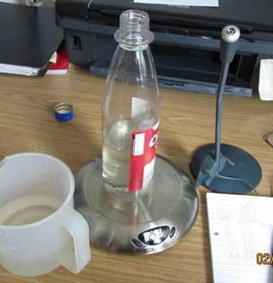
Vi har alle prøvet at blæse i en flaske og ved, at der opstår resonans. Vi ved også, at frekvensen ændres, når vi kommer vand i flaske. Men hvad afhænger frekvensen af?
To gode hypoteser:
Resonansfrekvensen afhænger af afstanden fra vandet til flaskens åbning
Resonansfrekvensen afhænger af flaskens rumfang
Det kan vi finde ud af vha. en køkkenvægt og en PC med programmet Datalyse og en mikrofon.
I programmet Datalyse vælges lydkort som apparat.
Frekvensen kan måles på to måder:
ved at blæse i flasken med mikrofonen tæt ved flaskeåbningen
ved at anbringe en højttaler over flasken og mikrofonen nogle centimeter nede i flasken
|
Metode 1: Mål hver frekvens flere gange og udregn gennemsnit.
Metode 2, graf til højre: Vælg sweep i Datalyse. Benyt derefter funktionen maksimum i Datalyse til at bestemme frekvensen. Eller bedre differentier funktionen og benyt nulpunkt til at bestemme frekvensen. |
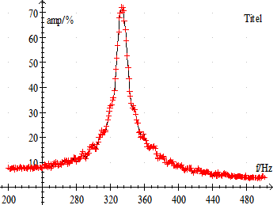 |
Der laves en serie af målinger, først med den tomme flaske, så kommes ca. 50 mL vand i flasken gentagne gange indtil flasken er næsten fuld. Her gang vejes flasken og frekvensen bestemmes.
Fyld flasken fuldstændigt med vand og vej den. Benyt målingen til at bestemme flaskens volumen.
Beregn flaskens volumen for samtlige målinger.
Teoretisk er frekvensen
bestemt ved 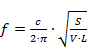
f er frekvensen, c er lydens hastighed i luft. S er tværsnitsarealet af halsen, L er længden af halsen og V er flaskens volumen ud over halsen. Dvs:
Vsamlet = V + Vhals ⬄ V = Vsamlet - Vhals
Formlen kan eftervises på to måder:
Metode 1
Vis, at ovenstående
formel kan omskrives til: 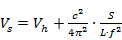
Dvs. Vs afhænger lineært af f -2 og Vh er grafens skæring med y-aksen. Herefter kan V beregnes og en graf tegnes.
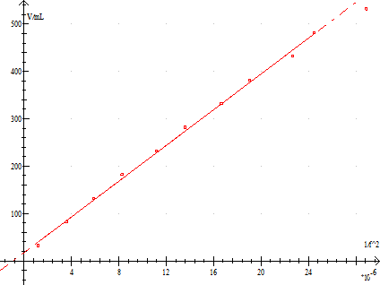
Eksempel på graf for Vs. Halsens volumen aflæses til 17 cm3
Metode 2
Indsæt V
= Vsamlet - Vhals
i formlen for frekvensen. Dvs. 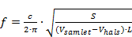
Vis, at en funktion af denne form passer med måleværdierne. Bestem samtidigt Vhals
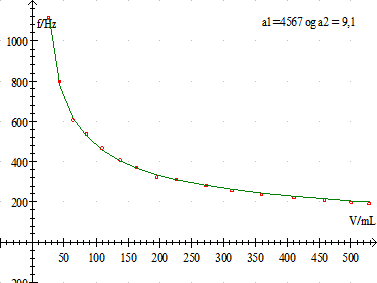
Dette fit lavet i Datalyse er forskriften for den grønne kurve f=a1/(V - a2)0.5 , hvor a1 og a2 er anført på grafen. Herefter kan lydhastigheden beregnes, men bestemmelsen er ikke præcis.
Der var to hypoteser:
Resonansfrekvensen afhænger af afstanden fra vandet til flaskens åbning
Resonansfrekvensen afhænger af flaskens rumfang
Hvis, bare målingerne var, som vist ovenfor, var det jo nemt nok. Men det er de heller ikke:
Her er så en lille overraskelse:
|
L/cm |
f/Hz |
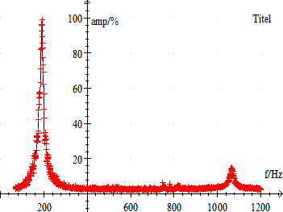 |
|
22,2 |
1066,2 |
|
|
21,0 |
1131,1 |
|
|
19,5 |
1337,0 |
|
|
15,4 |
1646,0 |
|
Grafen overfor viser et lidt længere sweep i den tomme flaske. Der ses en resonansfrekvens ved 1066 Hz. Flaskens højde er 22,2 cm. Tabellen viser, også frekvenser med vand i flasken. L er afstanden fra vandoverfladen til flaskens åbning. Prøv selv at finde en forklaring på disse resonanser.
Husk, at mikrofonen måler trykændringer og ikke bevægelsesændringer. Mikrofonen giver størst udslag, når den placeres, hvor der er knude for bevægelsen.
Når flasken er ved at være fuld, ses endnu en resonans, som ikke er rumfangsbestemt.
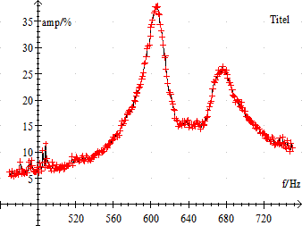
Der er ikke resonanser med l/4 i flasken.
En Helmholtz resonator består af en beholder indeholdende gas (atmosfærisk luft). Beholderen har en cylinderformet åbning. Luften i flaskehalsen kan sættes i svingninger, fordi gassen i beholderen virker som en fjeder. På figuren er flasken kolbeformet.
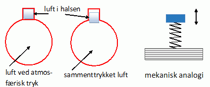
Når man puster sættes luften i svingninger med mange forskellige freksenser (hvid lyd). Kun de freksvenser, som er i resonans med flasken forstærkes. Det er, hvad resonans er!
Vi sammenligner flasken med et fjersystem
For fjersystemt gælder som bekendt, at F = -k·x, hvor F er fjederkraften, k er fjerderkonstanten og x er sammentrykningen af fjederen og svingningstiden er bestem ved
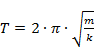
Massen af loddet svarer til massen af luften i flaskehalsen m = S·L·r, hvor S er tværsnitsarealet, L er længden og r er densiteten af luften.
Hvis luften i flaskehalsen pressen stykket x nedad, stiger trykket i beholderen.
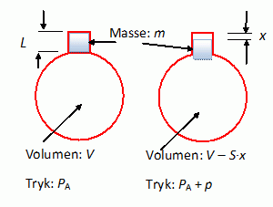
Trykket stiger fra værdien PA til værdien PA + p, når rumfanget mindskes fra V til V - S·x
Sammentrykningen af luften er adiabatisk. Dvs uden varmeudveksling med omgivelserne. Det er der simpelthen ikke tid til!
For en adiabatisk tilstandsændring af en gas gælder der:
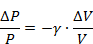
Dvs. den
relative trykændring er proportional med den realtive volumenændring og
proportionalitetsfaktor 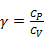
Med ovenstående betegnelser fås:
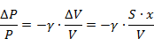
Det ekstra tryk i flasken DP vil påvirke luftmassen i flaskehalsen med en kraft givet ved F = DP·S.
Vi får 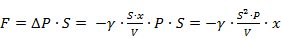
Vi har
hermed fundet resonatorens fjerderkonstant 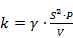
Svingningstiden bliver derfor
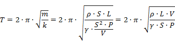
Indsættes, at lydens hastighed i luft er givet ved 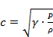
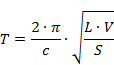
Eller at frekvensen er givet ved
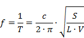
http://en.wikipedia.org/wiki/Helmholtz_resonance